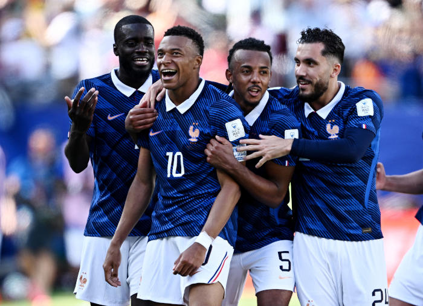
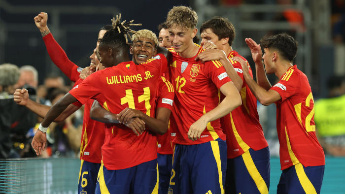
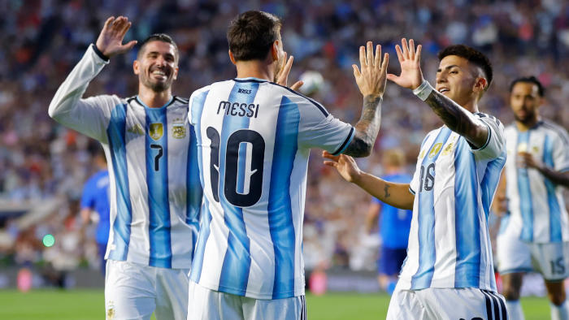
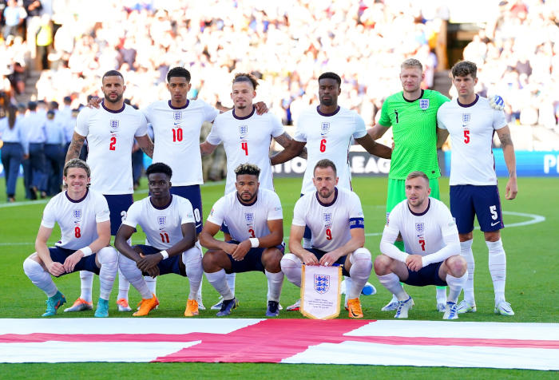
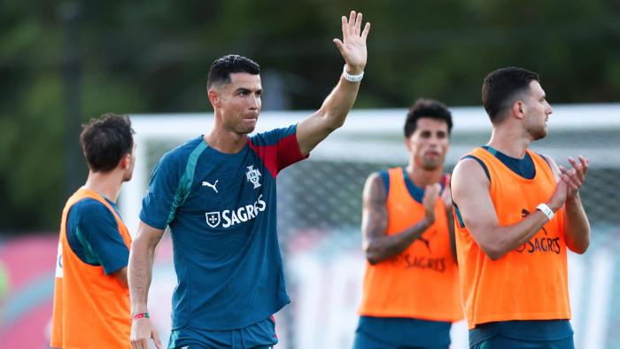
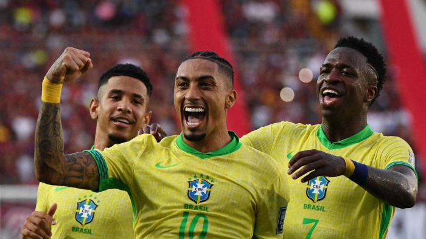
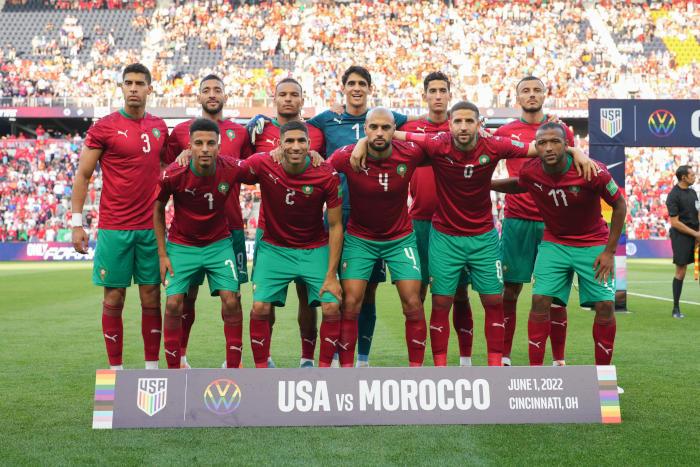
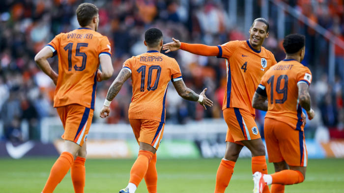
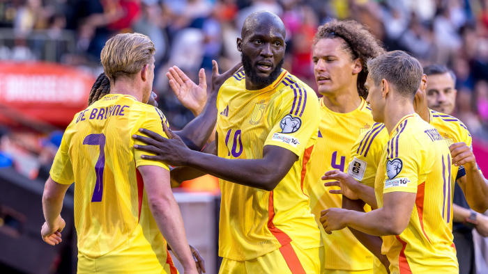
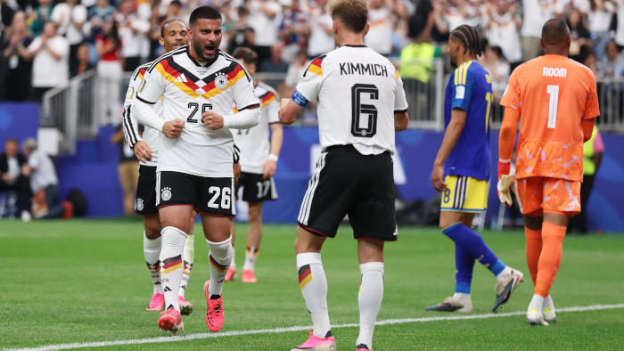

.png)
Ranking de Seleções da Fifa! (50 primeiros colocados)
1 - França
A França chega à Copa do Mundo de 2026 com o status de bicho-papão do futebol mundial. Finalista das últimas duas Copas (campeã em 2018 e vice em 2022), a seleção francesa carimbou seu passaporte para a América do Norte com extrema facilidade, mostrando que a sua infinita fábrica de talentos continua funcionando a todo vapor. A seleção francesa garantiu a liderança isolada de seu grupo de forma invicta nas eliminatórias, conquistando a vaga direta com várias rodadas de antecedência. O time se destacou pelo impressionante saldo de gols, aplicando goleadas impiedosas e sofrendo raríssimos sustos na defesa.

O plantel da França para 2026 é uma mistura assustadora de astros mundiais consolidados com jovens fisicamente dominantes que estouraram nos maiores clubes da Europa. Kylian Mbappé (Real Madrid) é a grande estrela da equipe, com sua velocidade supersônica e finalização letal. Com ele, a França vem com um jogador que vem fazendo uma temporada excepcional no Bayern Munich, Michael Olise, e o atual ballon d'or, Ousmane Dembélé, craque do PSG. Além desse poderoso ataque, a seleção francesa tem Aurélien Tchouaméni (Real Madrid), volante que dá a sustentação física e a qualidade de passe, uma linha defensiva com os zagueiros de ponta William Saliba (Arsenal), Dayot Upamecano (Bayern de Munique), Ibrahima Konaté (Liverpool) e Jules Koundé (Barcelona) e, debaixo das traves, o paredão Mike Maignan (Milan).
Como se os titulares não fossem o bastante, a França conta com seus talentosíssimos atacantes reservas Rayan Cherki (Manchester City), Marcus Thuram (Inter de Milão), Bradley Barcola (PSG) e Désiré Doué (PSG). Com essa verdadeira “seleção”, a equipe francesa está no intricado grupo I, com Senegal, Egito e Noruega.
2 - Espanha
A Espanha chega à Copa do Mundo de 2026 ostentando a pesada bagagem de atual campeã da Eurocopa (2024) e vice-campeã da UEFA Nations League. A outrora criticada seleção do "tiki-taka" improdutivo passou por uma transformação radical neste ciclo: hoje, a Fúria é uma equipe extremamente vertical, jovem, agressiva e que figura no topo da lista de favoritas ao título mundial na América do Norte. A Espanha teve uma das campanhas mais tranquilas e dominantes das Eliminatórias Europeias da UEFA. Sorteada como cabeça de chave, a Espanha sobrou em seu grupo. O time garantiu a liderança isolada e a vaga direta para o Mundial com duas rodadas de antecedência, apresentando um futebol que misturou goleadas em casa e exibições muito maduras como visitante.

A Fúria tem como sua principal joia o jovem Lamine Yamal (Barcelona). Aos 18 anos, a jovem estrela chega à sua primeira Copa do Mundo não como uma promessa, mas como uma das maiores realidades do futebol mundial. ogando pela ponta direita, ele combina uma capacidade de drible impressionante, visão de jogo assustadora e o poder de decidir partidas em um lance. Além de Yamal, a seleção espanhola conta com um elenco notável. Rodri (Manchester City), volante termômetro da Espanha e ballon d'or em 2024, Nico Williams (Athletic Bilbao), com velocidade e verticalidade, Dani Olmo (Barcelona), um dos jogadores taticamente mais inteligentes da Europa, e Pedri (Barcelona), maestro do meio-campo com um refino a deslumbrante.
A Espanha inicia seus trabalhos na Copa do Mundo de 2026 no complexo grupo H, com Cabo Verde, Arábia Saudita e, podendo ser um dos melhores jogos da Copa, a seleção uruguaia.
3 - Argentina
A Argentina de Lionel Messi (para muitos, o melhor jogador da história do futebol) chega forte para buscar o seu tetracampeonato. A atual campeã do mundo, seleção argentina, vem para a Copa de 2026 com um time cascudo, que sabe sofrer e sabe ainda mais jogar. Com um elenco com base na Copa de 2022, a Argentina vem com um elenco envelhecido e, consequentemente, inferior ao da última copa, mas com enormes expectativas para o eminente torneio.

Outrossim, os nossos hermanos levantaram a taça da Copa América de 2024, batendo a seleção da Colômbia. O comandante dessa máquina é o simbólico Lionel Scaloni. O campeão do mundo em 2022, caloni está há quase 8 anos no cargo (assumiu interinamente em 2018 e foi efetivado em 2019). Ele é, de longe, um dos técnicos mais longevos entre as grandes seleções deste Mundial. Essa continuidade permitiu que a Argentina desenvolvesse um "jogo de memória". Em entrevistas recentes, o treinador destacou que cerca de 60% a 70% do elenco atual é o mesmo que ergueu a taça no Catar, o que dá uma vantagem tática imensa pela falta de tempo de preparação das seleções antes da Copa, apesar da equipe não ser tão rejuvenescida assim.
Os atuais campeões do mundo têm ao seu dispor os heróis de 2022, Lionel Messi (Inter Miami), que dispensa comentários, Emiliano "Dibu" Martínez (Aston Villa), o herói dos pênaltis em 2022 e o mágico Ángel Di María (Rosário Central). O elenco tem igualmente o auxílio dos jovens consolidados Julián Álvarez (Atlético de Madrid) e Lautaro Martínez (Inter de Milão), atacantes de decisão, e Alexis Mac Allister (Liverpool) e Enzo Fernández (Chelsea), meias articuladores dessa seleção.
Os Hermanos, sem o peso do jejum de títulos que a assombrava no passado, desembarcam na Copa do Mundo de 2026 no grupo J, com previsão de pouquíssimas dificuldades contra seleções como Argélia, Áustria e Jordânia.
4 - Inglaterra
Criadores do futebol, a Inglaterra chega à Copa do Mundo de 2026 com uma das seleções mais assustadoras (no bom sentido) do planeta, carregando a enorme pressão de tentar quebrar um jejum de títulos mundiais que já dura 60 anos (desde 1966). Os Three Lions garantiram o primeiro lugar do grupo de forma invicta, acumulando goleadas e carimbando o passaporte sem sustos. O setor ofensivo foi o grande destaque da campanha, terminando como um dos mais positivos de toda a Europa.

Sob a orientação do artilheiro e criador Harry Kane (Bayern Munich), a seleção inglesa vem com uma geração deslumbrante. Além do fantástico Harry Kane, o artilheiro máximo do futebol europeu na temporada recente (2025/2026), Jude Bellingham (Real Madrid), meia motorzinho e criador, e Declan Rice (Arsenal), volante de notável força física e saída de bola, estão na equipe. Bukayo Saka (Arsenal), atacante técnico e com inteligência tática, se junta para completar a turma.
Os Three Lions se encontram no intricado grupo L, com Croácia, Gana e Panamá, para tentar fazer com que o famoso "It's coming home" - Está voltando para casa - se torne realidade.
5 - Portugal
A seleção portuguesa, que teve sua melhor trajetória na Copa do Mundo em 1966 com o “Pantera Negra”, Eusébio, vai para a última flechada de Cristiano Ronaldo. O português, maior artilheiro da sua seleção e da maior competição de clubes do mundo, a UEFA Champions League, vem para a sua provável última disputa de Copas do Mundo, sendo a sua sexta participação. O apelidado “robô”, Cristiano Ronaldo conquistou com a seleção portuguesa a recente UEFA Nations League em 2025, tendo também conquistado a mesma em 2019 e vencido a Eurocopa de 2016, aquela que seria o primeiro título de Portugal na história.

Além do maior jogador europeu de todos os tempos, Cristiano Ronaldo, a seleção lusa contém um elenco recheado de craques. Vitinha, João Neves e Nuno Mendes são a estrutura dorsal do atual time bicampeão da Champions, PSG, e da seleção portuguesa. Vitinha e João Neves são meio-campistas criadores, com exímia saída de bola e controle de jogo, já Nuno Mendes é um lateral completo, defendendo e atacando de forma singular. Ainda por cima, a equipe conta com o maestro e atual líder de assistências da Premier League, Bruno Fernandes (Manchester United), o gênio Bernado Silva (Manchester City), os velozes atacantes Rafael Leão (Milan), Pedro Neto (Chelsea), João Félix (Al-Nassr) e os defensores Rúben Dias (Manchester City) e João Cancelo (Barcelona).
Portugal chega à América do Norte jogando um futebol vistoso e candidatando-se fortemente ao título. Seu percurso começa no “fraco” grupo K, contendo Congo, Uzbequistão e a perigosíssima seleção colombiana.
6 - Brasil
A amarelinha mais temida do mundo chega com boas expectativas, apesar do ciclo desastroso entre as Copas de 2022 e 2026. A única pentacampeã do mundo passou por altos e baixos nesse período e muitas trocas de técnico, o que dificultou um trabalho mais sólido e com esquemas táticos preestabelecidos.
Após os inesquecíveis 4 minutos que acarretaram dolorosa eliminação para a seleção croata em 2022, a maior seleção do mundo sofreu uma abdicação do técnico Tite, campeão da Copa América em 2019 pelo Brasil e campeão da CONMEBOL Libertadores e do Mundial de Clubes da Fifa pelo Corinthians em 2012. Com a renúncia do Adenor (Tite), o time teve sob a sua liderança 4 técnicos. Ramon Menezes (5 meses), Fernando Diniz (7 meses), Dorival Júnior (2 anos) e o atual técnico da seleção e um dos maiores treinadores da história do futebol, Carlo Ancelotti. Os dois primeiros técnicos obtiveram um mal aproveitamento no comandando a equipe, somando mais derrotas do que vitórias. Dorival Júnior teve um aproveitamento de 58% em 16 jogos, com 7 vitórias, 7 empates e 2 derrotas, deixando a seleção classificada para o Mundial. Carlo Ancelotti tem um aproveitamento de 60% no comando da Seleção Brasileira, com 5 vitórias, 3 empates e 2 derrotas em 10 partidas oficiais.

Convenhamos que se tratando da seleção brasileira, esses números são ruins. Nas últimas 2 eliminatórias para o torneio, Tite deixou a seleção em primeiro lugar, com ar de que era superior às suas concorrentes no continente. A equipe terminou as eliminatórias na posição de quinto lugar, uma posição o Brasil nunca havia terminado desde 1998 (ano em que esse novo formato de eliminatórias foi implantado). Ademais, a Canarinho não conseguiu com que nenhum dos seus apontados como possíveis protagonistas batessem no peito e tomassem a frente da verde-amarela dentro de campo. Vinicius Júnior (Real Madrid), bicampeão da Champions e melhor jogador do mundo pela Fifa em 2024, não alcançou pela seleção aquilo que se esperava dele. Raphinha, jogador que muda o jogo no Barcelona e que é indispensável pelo time catalão, obteve os mesmos resultados de Vinicius.
Por todo esse percurso e por conta de jogadores que continham alto rendimento nos seus respectivos clubes, porém não engrenaram pela Escrete Canarinho, a pentacampeã sofreu um afastamento com seu torcedor. Entretanto, tal afastamento foi liquidado quando na convocação para a Copa, o treinador italiano disse o nome de Neymar Jr. O craque, maior artilheiro da história da seleção brasileira, passou por uma estação trevosa na sua carreira, sofrendo por inúmeras lesões e sendo uma dúvida para vestir a amarelinha. Contudo, o jogador conseguiu superar as dificuldades e ser convocado para o torneio.
A seleção brasileira sob a chefia de Neymar Jr irá com excelente time, na teoria, para a Copa do Mundo de 2026. A equipe também conta com os atuais melhores zagueiros do mundo, Marquinhos (PSG) e Gabriel Magalhães (Arsenal), Casemiro (Manchester United), Bruno Guimarães (Newcastle), Raphinha (Barcelona), Vini Jr (Real Madrid) e o iluminado, Endrick (Lyon). Sendo cabeça do grupo C, a seleção vai em busca do sonhado hexacampeonato enfrentando Marrocos, Haiti e Escócia, em um grupo razoavelmente complicado.
7 - Marrocos (Seleção mais bem ranqueada da África)
A seleção de Marrocos chega à Copa do Mundo de 2026 com o status de potência consolidada. Após assombrar o planeta ao se tornar a primeira seleção africana a alcançar a semifinal de um Mundial, no Catar em 2022, os Leões do Atlas carimbaram o passaporte para a América do Norte com uma campanha irrepreensível, embora tenham vivido mudanças drásticas nos bastidores recentemente. A seleção marroquina fez uma campanha absolutamente impecável nas Eliminatórias Africanas. Foram 8 vitórias em 8 jogos disputados, terminando na liderança isolada à frente de Níger, Tanzânia, Zâmbia e Congo. O time marcou 22 gols e sofreu apenas 2 em toda a caminhada.

Marrocos chega com um elenco ainda mais talentoso e profundo do que em 2022, misturando os heróis do Catar com reforços de elite europeia. O time tem a presença do capitão e atual bicampeão da UEFA Champions League, Achraf Hakimi (Paris Saint-Germain). A equipe também conta com o paredão, Yassine "Bono" Bounou (Al-Hilal), o icônico goleiro, e de Brahim Díaz (Real Madrid), o meia-atacante criativo do time.
Os Leões do Atlas iniciam seu caminho até a tão sonhada conquista da Copa do Mundo no grupo C, tendo pela frente o Brasil, Haiti e Escócia.
8 - Holanda
A atual semifinalista da Copa do Mundo, a seleção holandesa recuperou seu futebol dominante e está pronta para tentar apagar o rótulo de "eterna vice-campeã". Após fazer uma das eliminatórias mais sólidas do continente europeu, os holandeses desembarcam na América do Norte misturando uma defesa com status de elite e um ataque muito agressivo. Sua trajetória para a maior competição de seleções do futebol foi esplêndida. Sorteada no Grupo G das eliminatórias, a Holanda foi avassaladora. O time terminou a campanha de forma invicta, acumulando 6 vitórias e 2 empates, terminando na liderança isolada à frente da Polônia. O grande destaque foi o poder de fogo: a equipe marcou 27 gols em apenas 8 jogos (média superior a 3 gols por partida).

O comandante da Holanda é o experiente Ronald Koeman, uma lenda viva do futebol do país. Ele assumiu sua segunda passagem pela seleção em janeiro de 2023, sucedendo Louis van Gaal após o Mundial do Catar. A Laranja Mecânica tem à sua disposição o grande capitão, xerife e espetacular zagueiro, Virgil van Dijk (Liverpool). Além dele, soma-se Frenkie de Jong (Barcelona), cabeça pensante do time, e os atacantes Cody Gakpo (Liverpool), Micky van de Ven (Tottenham) e Memphis Depay (Corinthians), o maior artilheiro da laranjinha mais temida do futebol mundial.
A Holanda inicializa seu sonho de tornar-se, finalmente, campeã do mundo no complicadíssimo grupo F, com Japão, Suécia e Tunísia.
9 - Bélgica
Com a badalada "Geração de Ouro" envelhecida, e sem alguns dos seus antigos craques como Eden Hazard, a Bélgica não vem como uma das favoritas para a Copa do Mundo de 2026. Porém, essa seleção que conta com Kevin de Bruyne e Romelu Lukaku, companheiros de time no gigante italiano Napoli, além do extraordinário goleiro Thibaut Courtois (Real Madrid), não pode ser definida como “mais uma”.
Os Diabos Vermelhos, sob a chefia de Domenico Tedesco (3 anos no cargo de técnico), tiveram uma campanha de transição nas Eliminatórias Europeias da UEFA, mas carimbou sua vaga sem precisar do drama da repescagem. Apesar de apresentar um futebol mais oscilante devido ao encaixe dos jovens jogadores, a Bélgica fez valer seu peso institucional no grupo. O time garantiu a liderança e a vaga direta na reta final das eliminatórias.

Tendo como parâmetro ofensivo o jovem Jérémy Doku (Manchester City), a Bélgica está no Grupo G e estreia no dia 15 de junho contra o Egito, enfrentando depois o Irã e a Nova Zelândia.
10 - Alemanha
A Alemanha chega à Copa do Mundo de 2026 sob uma atmosfera de reconstrução e forte desejo de redenção. Após os fiascos históricos de ter caído ainda na fase de grupos nas duas últimas Copas (2018 e 2022), a tradicional Mannschaft passou por uma grande reformulação interna e chega à América do Norte muito mais sólida e com uma nova identidade.

O sucesso ofensivo da Alemanha passa obrigatoriamente pelos pés de dois meias criativos espetaculares: Jamial Musiala (Bayern Munich) e Florian Wirtz (Bayer Leverkusen). Musiala se recuperou de uma lesão sofrida no meio do ciclo e voltou voando, com seus dribles curtos e imprevisibilidade. Wirtz com sua visão de jogo absurda, completa essa dupla dinâmica na criação de jogadas da seleção tetracampeã mundial. Como se não fosse suficiente, eles ainda contam com o auxílio de Joshua Kimmich (Bayern de Munique), capitão, lateral-direito construtor e líder com uma mentalidade exemplar.
O time, que nos causou o fiasco do 7x1 em pleno Mineirão, começa sua jornada no grupo E, onde é de longe a favorita para passar sem sustos. Podendo deixar enfim o fantasma da fase de grupos que a assombrou nas últimas duas edições da competição.
Posições 11 até 50
| Posição | Seleção | Continente | Principal Jogador |
|---|---|---|---|
| 11 | Croácia | Europa | Luka Módric |
| 12 | Itália | Europa | Gianluigi Donnarumma |
| 13 | Colômbia | América do Sul | Luis Díaz |
| 14 | Senegal | África | Sadio Mané |
| 15 | México | América do Norte | Santiago Giménez |
| 16 | Estados Unidos | América do Norte | Christian Pulisic |
| 17 | Uruguai | América do Sul | Federico Valverde |
| 18 | Japão | Ásia | Takefusa Kubo |
| 19 | Suíça | Europa | Granit Xhaka |
| 20 | Dinamarca | Europa | Christian Eriksen |
| 21 | Irã | Ásia | Mehdi Taremi |
| 22 | Turquia | Ásia/Europa | Arda Güler |
| 23 | Áustria | Europa | David Alaba |
| 24 | Equador | América do Sul | Moisés Caicedo |
| 25 | Coreia do Sul | Ásia | Son Heung-min |
| 26 | Nigéria | África | Victor Osimhen |
| 27 | Austrália | Oceania | Nestory Irankund |
| 28 | Argélia | África | Riyad Mahrez |
| 29 | Egito | África | Mohamed Salah |
| 30 | Canadá | América do Norte | Alphonso Davies |
| 31 | Noruega | Europa | Erling Haaland |
| 32 | Ucrânia | Europa | Artem Dovbyk |
| 33 | Panamá | América Central | Adalberto Carrasquilla |
| 34 | costa do marfim | África | Yan Diomandé |
| 35 | Polônia | Europa | Robert Lewandowsk |
| 36 | Rússia | Ásia/Europa | Aleksandr Golovin |
| 37 | País de Gales | Europa | Brennan Johnson |
| 38 | Suécia | Europa | Viktor Gyökeres |
| 39 | Sérvia | Europa | Aleksandar Mitrović |
| 40 | Paraguai | América do Sul | Miguel Almirón |
| 41 | República Tcheca | Europa | Patrik Schick |
| 42 | Hungria | Europa | Dominik Szoboszlai |
| 43 | Escócia | Europa | Scott McTominay |
| 44 | Camarões | África | Vincent Aboubakar |
| 45 | Congo | África | Yoane Wissa |
| 46 | Tunísia | África | Ellyes Skhiri |
| 47 | Grécia | Europa | Christos Tzolis |
| 48 | Eslováquia | Europa | Milan Škriniar |
| 49 | Venezuela/td> | América do Sul | Salomón Rondón |
| 50 | Uzbequistão | Ásia | Abdukodir Khusanov |